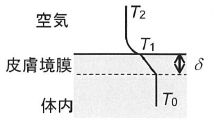

令和元年度 問34 化学プロセス
気温T2＝29.0℃、人体の体内温T＝36.0℃のとき、皮膚表面温度T1［℃］に最も近い値はどれか。ただし、皮膚と一体内に厚さδ＝4 mmの温度境膜（皮膚膜）を考え、皮膚の熱伝導率λ＝0.21 W m-1 K-1とする。また、皮膚表面空気側の伝熱係数をh＝8.8 W m-2 K-1とする。

①
5.0℃
②
3.0℃
③
1.5℃
④
0.0℃
⑤
9.0℃
正答
① 5.0℃
固体の熱流束はフーリエの法則q＝－k（dT/dx）から計算できます。（dT/dx）は温度の変化量dTと距離の変化量dxの比であることを表します。
熱流束qの単位Wm-2はWを変形してJ/s・m-2とも記載できます。つまり熱流束は、ある断面に対して直交する方向に伝わる、単位時間当たりの熱量を意味します。そのため皮膚と空気のように密着して連続的に伝熱する状態では、同一面積における皮膚と空気の伝熱量（熱流束）が同じとして計算できます。
フーリエの法則より、皮膚の熱流束は0.21 W m-1 K-1×（36.0-T1）K / 0.004 m＝1,890-52.5T1 W/m2です。
空気の熱流束は8.8 W m-2 K-1× (T1-29.0) K＝8.8T1-255.2 W/m2です。
2式で方程式を解くとT1＝35.0℃と求まります。